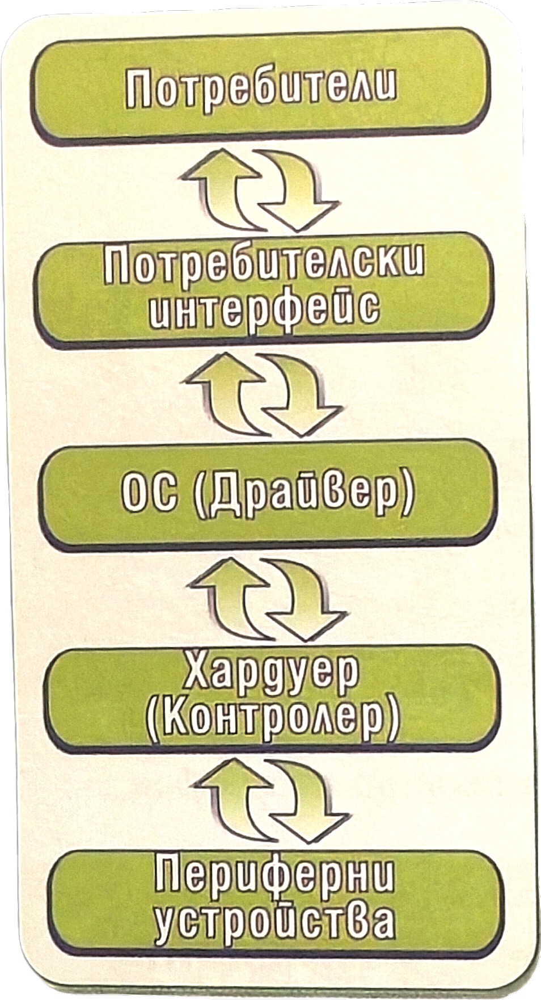
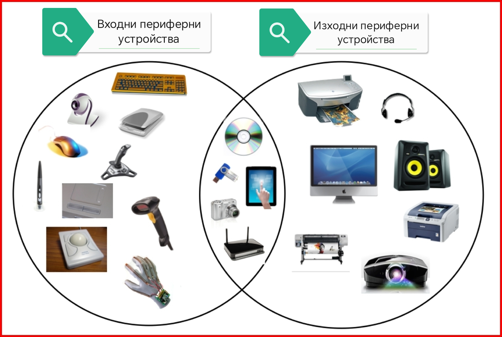
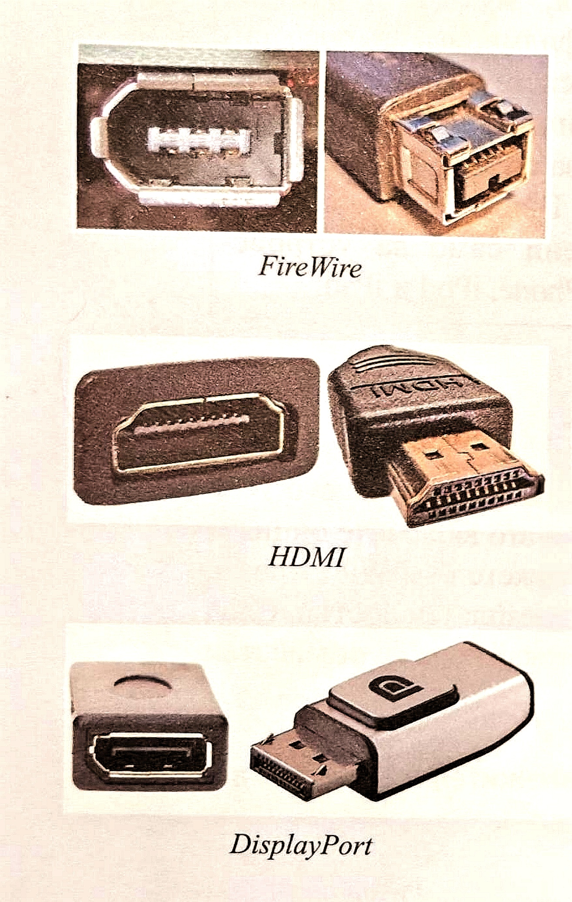

Периферните устройства (ПУ) осигуряват връзката между компютъра, потребителя и външната среда. В зависимост от функциите си те се разделят на: Входни устройства: Подават данни към процесора и паметта. Примери: Клавиатура, мишка, скенер, видеокамера, микрофон, трекбол, тачпад, джойстик. Изходни устройства: Показват резултатите от обработката на информацията. Примери: Монитор, принтер, тонколони, слушалки, плотер, проектор. Запомнящи устройства: Служат за трайно и дългосрочно съхранение на данни. Примери: Твърд диск (HDD), SSD диск, компактдиск (CD/DVD/Blu-ray), USB флаш памет. Комуникационни устройства: Осъществяват обмена на данни между компютри в мрежа. Примери: Модем, рутер, суич, хъб. Как се свързват периферните устройства? Портове: Физическите места за включване на кабелите на ПУ към компютъра (напр. USB, FireWire, HDMI, DisplayPort, DVI, VGA, LAN). Стандартен интерфейс се нарича технологията на взаимодействие и обмен на информация между ПУ и централния процесор. Контролери: Специализирани устройства (платки като видеокарта, звукова карта, мрежова карта), които управляват обмена на данни между ЦП и периферните устройства. Драйвери: Специални програми в Операционната система, нужни за правилното функциониране на всяко ПУ. Съвременните системи поддържат технологията Plug-and-Play, която автоматично разпознава и конфигурира нovovключения хардуер. |
   |